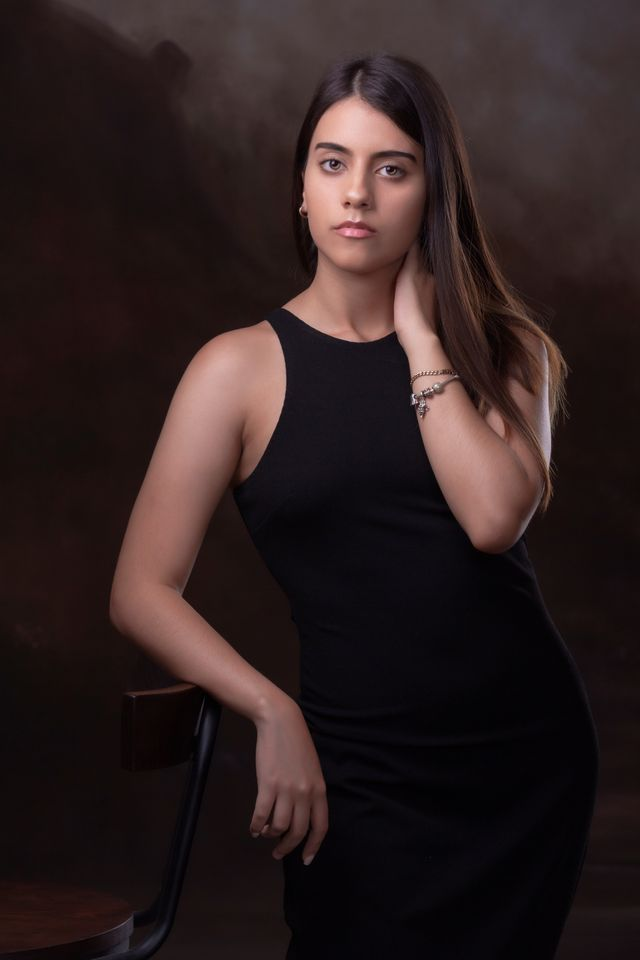
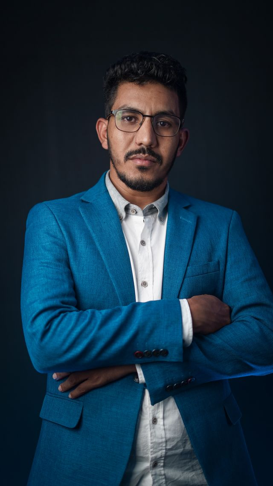

¿Quién soy?
Soy Martín Herrera, fotógrafo profesional especializado en retratos, fotografía corporativa y cobertura de eventos. Mi trabajo busca crear imágenes naturales, cuidadas y útiles para cada cliente.
Antes de cada trabajo me gusta conocer qué necesita el cliente, dónde utilizará las fotografías y qué resultado espera obtener.
Trabajo tanto con personas que nunca participaron de una sesión profesional como con empresas y emprendimientos que necesitan producir contenido visual de manera periódica.
Servicios
-
Retratos profesionales
Sesiones individuales para perfiles profesionales, currículums, sitios web, portfolios y redes sociales.

-
Fotografía para emprendedores y marcas
Producción de imágenes para presentar productos, equipos de trabajo, espacios comerciales y contenido institucional.
-
Fotografía corporativa
Retratos de integrantes de empresas, fotografías de oficinas y producción de imágenes destinadas a sitios web y comunicación empresarial.

-
Cobertura de eventos
Fotografía de eventos empresariales, encuentros profesionales, conferencias, celebraciones y actividades especiales.
-
Sesiones personales y familiares
Fotografías individuales, en pareja o en familia realizadas en exteriores o espacios previamente acordados.
-
Edición y entrega digital
Selección y edición de las mejores fotografías de cada sesión, con entrega en formato digital listas para utilizar.
Trayectoria
Trabajo profesionalmente en fotografía desde hace más de ocho años.
Mi experiencia incluye sesiones de retrato, producción de contenido para marcas, fotografía de equipos de trabajo y cobertura de eventos de distintas escalas.